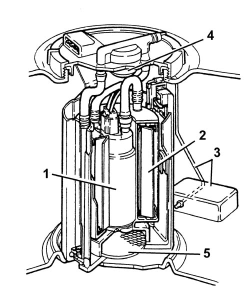

1040AB SUBMERGED FUEL PUMP CHECK
- Path
- Test > 10 ENGINE UNIT > 1040 FUEL TANK AND PIPES > 1040A FUEL TANK AND COMPONENTS > 1040AB SUBMERGED FUEL PUMP CHECK
- Kind
- test / check procedure
- Applies to
- engines: 1.8 T.SPARK; all production periods
- Interactive page
- https://sloeber94.github.io/elrnDB-aGt/en/#/125000744
Applies to: engines: 1.8 T.SPARK; all production periods
Check that the pump absorption is less then 8 Ampere with a supply voltage of 13.5 V.
- fuel pump
- fuel filter
- float-type level gauge
- diaphragm pressure regulator
- gauze pre-filter
